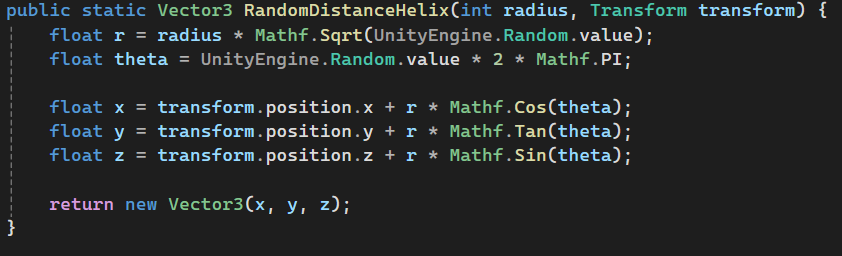
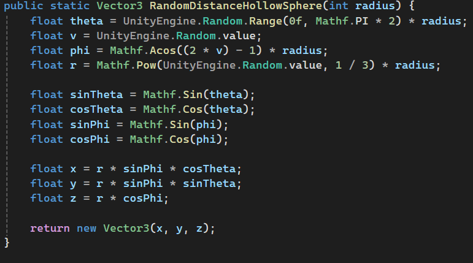
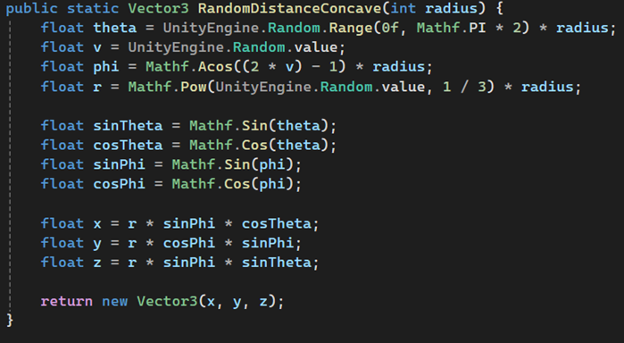
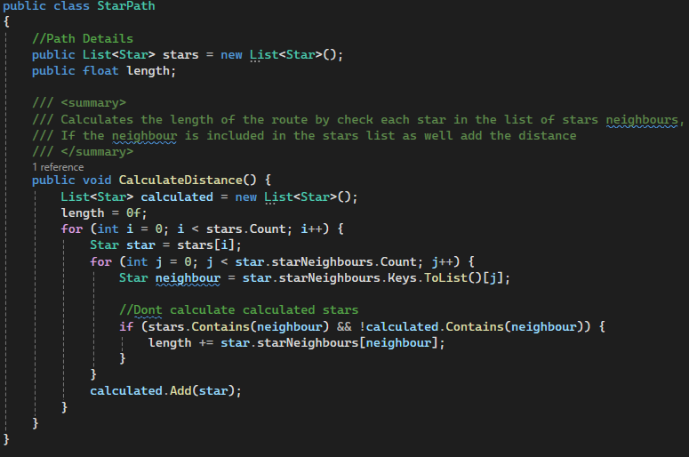

This project features a galaxy of stars that is generated at runtime. The stars have paths between them that can be travlled across by a spaceship, using a Dijkstra pathfinding algorithm.
The project itself features a galaxy of individually named stars that are generated at runtime, there are a lot of changeable parameters in this project such as the shape of the galaxy itself. This worked by having multiple different functions that would find a random coordinate, I discovered the shapes by just changing values around and experimenting.
  Each star also had routes to surrounding stars that were close enough, this was simple enough as each star would just do a radius check to find the stars close to it, and then add it to its array of neighbours. To make the simulation more interesting, I had each star remove a random amount of neighbours so that not all the stars were connected to each other. This left some areas inaccessable and some stars became completely isolated. Each star also stored the distance to all of the surrounding neighbour stars.
For our project, we were given a very simple project demonstrating a Dijkstra style pathfinding algorithm, from this we had to adapt it to work with our solutions. The final product was an algorithm that would find the shortest distance from one star to another, while also noting each star along the path, and the total distance.
This worked by first of all getting a start and end star from the players input, the player could click on stars to select them to travel between. It then sets all of the distances between each star to infinity, it then repeatedly selects the closest star that has unvisited neighbouts, and calculates the distance to its neighbours.
It keeps track of the current shortest distance, and when it is finished, it will add each star to an array of stars called a Star Path. The Star Path not only stores all of the stars in the path but also stores the total length of the path.
There are numerous restraints within the project to make the simulation more interesting, the simplest one to incorporate was a fuel level. This would just make it so that if the path you want to take is too long, the spaceship wouldn't be able to traverse it.
There is also a faction system within the simulation, picking a faction will choose a random enemy faction from the remaining factions. During the simulation, you can choose to avoid enemy territories, this works by setting the distance of each enemy star to infinity so that the pathfinding algorithm will ignore those stars.
For ally stars, all the distances will be halved, meaning it takes half the amount of fuel to travel to these stars, which influences the pathfinding algorithm.